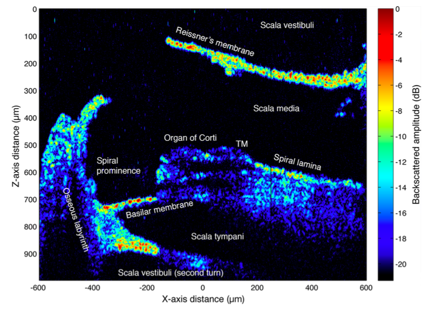
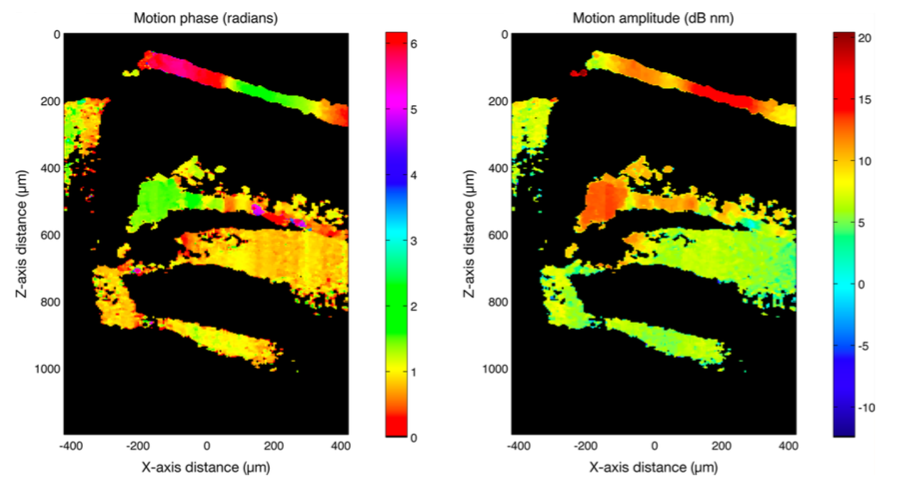
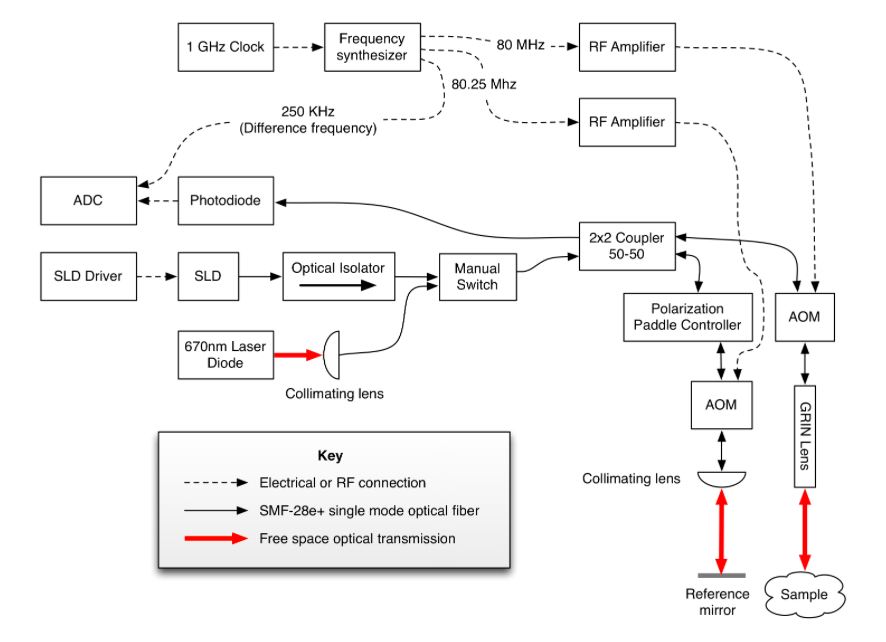

<!DOCTYPE html>
<html>
  <head>
    <meta charset="utf-8" />
    <meta name="viewport" content="width=device-width, initial-scale=1.0" />

    <title>
      Logan Williams — Optical Coherence Tomography
    </title>

    <link
      rel="stylesheet"
      href="https://unpkg.com/leaflet@0.7.3/dist/leaflet.css"
    />
    <link rel="stylesheet" href="/css/main.css" />

    

    <meta name="twitter:card" content="summary_large_image" />
    <meta name="twitter:site" content="@obtusatum" />
    <meta name="twitter:creator" content="@obtusatum" />
    <meta property="og:url" content="http://subject.space/projects/oct-thesis/" />

    
    <meta property="og:title" content="Optical Coherence Tomography" />
     
    <meta property="og:description" content="My master&#39;s thesis on three dimensional imaging inside the mammilian cochlea. " />
      
    <meta property="og:image" content="http://subject.space/projects/oct-thesis/background.jpg" />
     

    
    <script
      async
      src="https://www.googletagmanager.com/gtag/js?id=UA-87740234-3"
    ></script>
    <script>
      window.dataLayer = window.dataLayer || [];
      function gtag() {
        dataLayer.push(arguments);
      }
      gtag("js", new Date());

      gtag("config", "UA-87740234-3");
    </script>
  </head>
  <body></body>
</html>


<main>
  <header class="header">
    <h1><a href="/">Logan Williams</a></h1>
  </header>

  <div class="post">
		<h1>Optical Coherence Tomography</h1>
		<p><p>For its importance to human sensation, there is surprisingly little known about the mechanics of motion within the ear. Part of the reason for this is the extremely tiny magnitude of motions within the ear &mdash; a sound at the threshold of human hearing creates a vibration on the eardrum the size of a hydrogen atom. From October 2012 until June 2014, I worked with <a href="http://www.rle.mit.edu/people/directory/dennis-freeman/">Professor Denny Freeman</a> and his laboratory at RLE on a new fiber optic apparatus for imaging this motion within the ear.</p>
<p>This apparatus used a technique known as optical coherence tomography, which takes advantage of the random nature of "white" light to image within biological tissues. It is possible to imagine this imaging modality as essentially sending a small pulse of light into a sample and sensing each reflection, which will contain information about the density of the tissue at a depth proportional to the time delay of that reflection. This produces images that can show slices into biological samples, such as the guinea pig cochlea below:
</p>
<p>

</p>
<p>This technique was then extended to allow the motion within a sample to be measured as well. Light that reflects from an object in motion will have a shift in its wavelength proportional to the velocity of the object. Using acousto-optical modulators, it is possible to move this wavelength shift into a range in which it can be measured electrically. From these measurements, the amplitude and phase of the motion could be extracted as a function of spatial position.</p>
<p>

</p>
<p>This instrument had a noise floor of just 1 pm/&radic;Hz, allowing the atomic-scale vibrations of interest to the Micromechanics group to be measured. For more information about this project, my final thesis is available <a href="https://dspace.mit.edu/handle/1721.1/92090">here</a>, and the abstract is reprinted below.</p>
<p><strong>Design and Implementation of a Fiber Optic Doppler Optical Coherence Microscopy System for Cochlear Imaging</strong></p>
<p>In this thesis, the design and implementation of a fiber optic Doppler optical coherence microscopy (FO-DOCM) system for cochlear imaging applications is presented. The use of a fiber optic design significantly reduces system size and complexity and the construction of a novel alignment and micropositioning apparatus increases ease of use for the researcher performing the imaging. To enable precise measurements of tissue motion, a time domain DOCM approach is used, utilizing an acousto-optic modulator (AOM) based optical heterodyne system to generate a stationary interference carrier frequency. By referencing this interference signal against the AOM drive signals, measurements of motions with magnitude on the order of 10 pm are shown to be possible. In addition to interferometrically measuring small amplitude motion, the FO-DOCM system is shown to be capable of imaging with a volumetric resolution of 10 x 9 x 9 &mu;m. Demonstrative results of imaging cochlear tissue are presented by using the FO-DOCM system to image and measure motion in a guinea pig cochlea <em>in vitro</em>.</p>
<p>

</p></p>
	</div>
</main>

    </body>
</html>